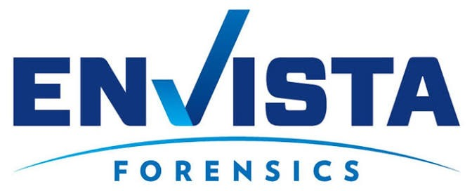
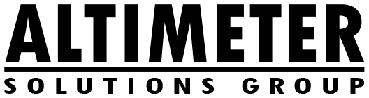

Finance
Interim & Fractional CFO
For private equity portfolio companies and mid-market businesses from $20M to $1B+ in revenue.
- M&A transaction support
- Cash flow management
- Financial modeling
- Business transformation
Interim & Fractional CFO Leadership
with 20+ years leading enterprise financial strategy, capital allocation, and operational value creation.
Agentic AI-driven business process improvement and transformation.
Experience across leading institutions & portfolio companies


About the Firm
Gregory Mazza Founder & Principal
Five years in a dedicated interim CFO practice serving sponsor-owned businesses from $250M to $1B+ in revenue, directing capital structure optimization, 100-day value creation plans, post-merger integration, and FP&A and ERP transformation.
Currently engaged as interim CFO to an edge data center platform, advising on strategy, finance and fundraising, and as an AI business development advisor to a deterministic, agentic AI platform company. Experienced on both sides of the transaction: interim operator inside portfolio companies, and M&A principal on $500M+ of enterprise value.
Public company and international reporting background including IFRS, UK GAAP, SOX controls, and London Stock Exchange listing readiness. Trusted advisor to boards, C-suite executives, and private equity sponsors, with a track record of building high-performing teams and delivering measurable enterprise value creation.
Start a conversationServices
Financial leadership, applied AI, and the infrastructure decisions increasingly tied to both.
Finance
For private equity portfolio companies and mid-market businesses from $20M to $1B+ in revenue.
AI Transformation
Agentic AI strategy and implementation that changes how portfolio companies operate, from prioritization through execution.
Infrastructure
CFO and fundraising support for edge data center companies scaling infrastructure and capital.
“Institutional-grade financial discipline, applied wherever the business is headed next.”
Approach
A focused review of the finance function, cash position, reporting, and the priorities of ownership and the board.
Immediate attention to cash flow, close cadence, and the reporting stakeholders rely on.
Models, processes, and AI-enabled workflows that support the value-creation plan and transactions ahead.
A clean handoff to a permanent leader or ongoing fractional support, with documentation in place.
Expertise
Twenty-plus years across finance leadership and transformation work.
Contact
Tell me about your situation and I’ll respond directly: no gatekeepers.
Prefer email directly? greg@mazza-consulting.com